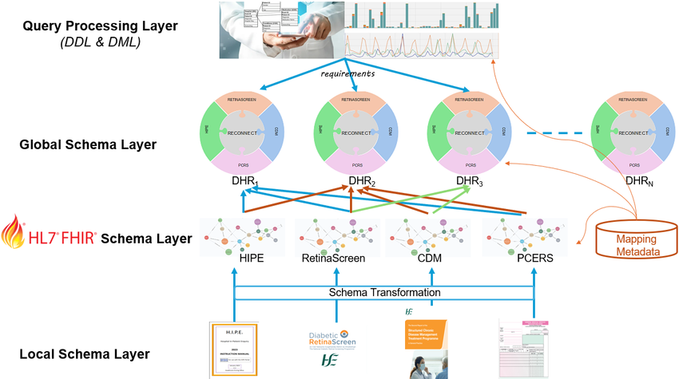
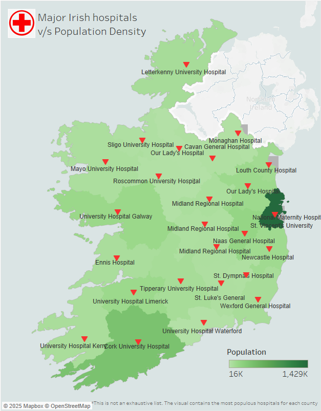

Research Data Engineer
I’m involved in the entire product development lifecycle and continuous maintenance of the product proprietary to Enfusion which caters to 500+ clients and interacts with a wide range of heterogeneous sources of data. Alongwith, this managing a team across the globe.
My role in the project:
- Developing data pipelines to ingest data from heterogeneous sources (ranging from legacy sources like mainframe to modern sources like Third Party APIs, Big-data platforms) based on protocols particularly defined under Enfusion, which helps in the reconciliation of daily transactions,
- Designing custom reports for different destinations in the form of a variety of messages (including simple text messages, XML, internal API being leveraged as a source externally and formats specific to clients),
- Creating Domain specific functionality in sync with Enfusion’s standards and framework to enhance data orchestration process making overall process smooth.
- Provide faster resolution of the issues thus meeting required SLA (Service Level Agreements) that has been agreed upon with the clients
- Provide a satisfactory RCA (Root Cause Analysis) with a logical explanation to the clients
Get In Touch!

